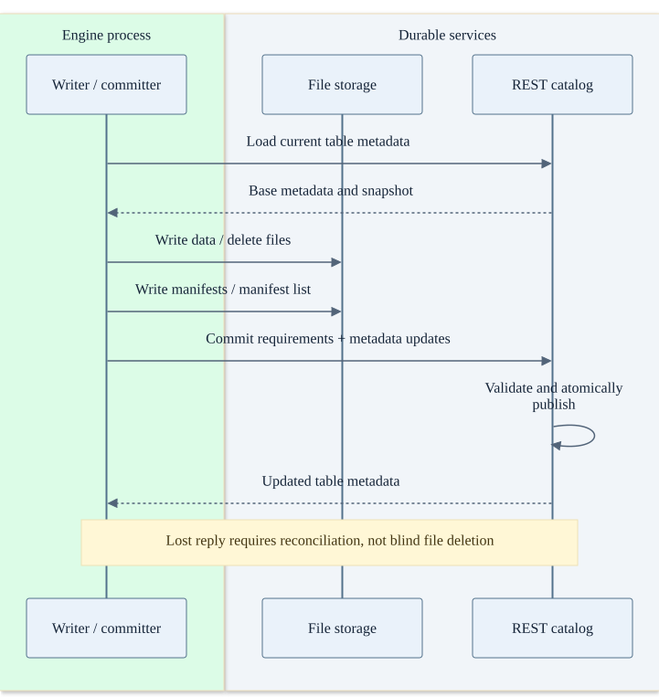
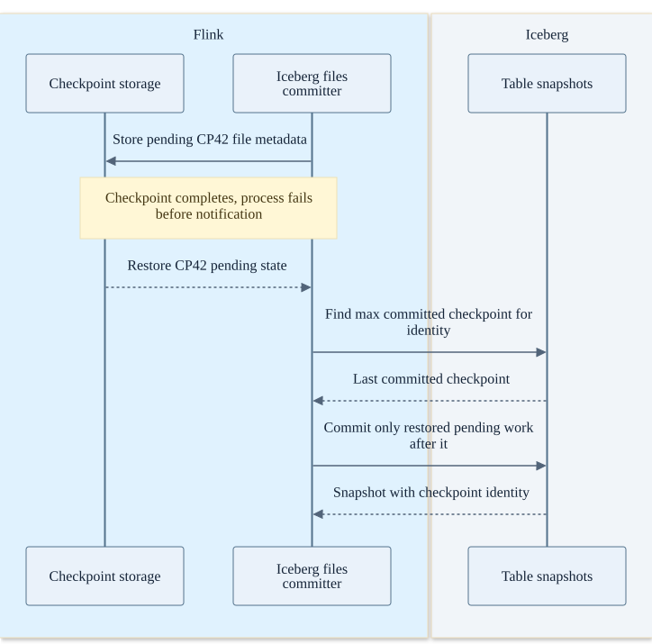

Chapter 12 · source-backed walkthrough
Iceberg: files, snapshots and atomic publication
Iceberg is a table format and commit protocol implemented through engine integrations and catalogs. Writers create files, but files become part of the table only when a new metadata state / snapshot is successfully published. Readers plan against a chosen snapshot.
Before the detail
The mental model
Files contain rows; the table metadata determines which files belong to a visible snapshot. A successful upload is only one step toward publication.
Worked example: connect the system view to the code
A writer uploads file F and prepares S900 from S899. Before metadata publication, readers of S899 do not gain F. If the commit reply is lost, F might already be referenced by S900, so deleting it as an orphan is unsafe.
- Prepare and publish metadata
SnapshotProducer coordinates snapshot commit and eligible retry.
- Resolve restored sink work
IcebergFilesCommitter reconciles prior checkpoint publication.
- Plan a read
DataTableScan selects files for a chosen table snapshot.
Illustrative reasoning example using this chapter's source scope; not a recorded deployment or executed experiment.
Does finding a Parquet file in the bucket mean it is a committed table row?
No. The selected snapshot and applicable delete/filter semantics determine the logical table contents.
Choose a reading path · Terms and progress boundaries · Clarity review
01
Storage hierarchy and service boundaries
The catalog resolves a table to its current metadata. Table metadata records schema, partition specs, snapshots and references. A snapshot points to a manifest list. Manifest entries identify data and delete files with metadata used for planning. Data files such as Parquet contain the actual rows.
The catalog and file storage serve different purposes. A REST catalog receives metadata requirements and updates over HTTP; files are read or written through FileIO to object storage or a filesystem. Other catalog implementations use their own atomic commit mechanism. A table-format diagram should not pretend every catalog is one universal RPC service.
Readers can continue reading a pinned valid snapshot while another writer commits. New readers or explicit refreshes discover a later snapshot. A metadata cache can therefore trade fewer catalog requests for stale discovery of the newest snapshot. Snapshot consistency and latest-data freshness are different properties.
From table identity to rows
Metadata arrows are references, not a requirement that all reads occur serially. Planning and file I/O can be parallelized.

02
Commit protocol and concurrency
Writers create new data files and metadata before publishing the new table state. The commit compares against the expected base / requirements and applies metadata updates atomically according to the catalog implementation. Two concurrent writers can start from the same base; one may have to refresh, validate and retry.
SnapshotProducer retries CommitFailedException using configured backoff. Not every conflict is safely retryable: operation-specific validation must still pass. An append and an overwrite have different conflict semantics. CommitStateUnknownException is deliberately distinct: the operation may already have committed, so eager deletion of its files would be unsafe.
The REST path constructs UpdateTableRequest(requirements, updates) and posts it to the table endpoint. This checkout includes limited reconciliation for certain snapshot-add-only ambiguous updates. That does not mean every catalog or arbitrary operation resolves every timeout automatically.
Write files, then publish one table update
A failed response may be ambiguous. The storage writes alone do not make rows visible to snapshot readers.

A conflict and an unknown outcome need different handling
Retry only when the operation and validation permit it. Retain possibly committed files while the result is unknown.

03
Flink to Iceberg checkpoint recovery
For the inspected Iceberg Flink v2.3 integration path, IcebergStreamWriter emits file write results around checkpoint boundaries. IcebergFilesCommitter stores pending file / manifest information in checkpoint state. notifyCheckpointComplete commits the files up to the completed checkpoint.
The snapshot summary records Flink job / operator identity and the maximum committed checkpoint. On restore, the committer reads the table history to determine which checkpoint work is already published and commits remaining restored pending work. A missed completion notification therefore does not imply lost output.
A failure after snapshot publication but before the task remembers success can be reconciled using those recorded identities. Stable operator identity and preserved recovery state matter. Premature snapshot expiration or cleanup must not destroy metadata still required to reconcile retained checkpoints. This is one inspected connector path; the repository also contains Sink V2 integration classes.
Recover a checkpoint whose commit notification was lost
CP42 is durable before the engine fails. Recovery finds whether its files are already represented in the table.

04
Scan planning, deletes and small-file costs
DataTableScan constructs a ManifestGroup from data and delete manifests. Partition summaries and file statistics can eliminate work before files are opened. Remaining file scan tasks carry residual filtering and delete applicability. File pruning is not the same as applying all row predicates.
Parquet readers can project columns, inspect row-group metadata and issue ranged reads. Rows still need the applicable position / equality delete semantics and final predicates. A native scan path that reads Parquet while ignoring Iceberg delete semantics would be incorrect for affected tables.
Smaller checkpoint intervals can create more small files for a streaming sink. Small files raise object requests, manifest entries and scheduling overhead. Larger files improve scan amortization but delay publication or increase writer memory depending on the rolling / checkpoint design. Compaction spends compute and rewrite I/O to improve future reads.
Iceberg has atomic publication, not its own replicated disk service. Data and metadata durability depend on the underlying storage and catalog. Catalog unavailability can block new planning / commits while already planned reads may continue if they have the required metadata and storage access.
Prune work before decoding rows
The exact filters pushed into each layer depend on engine and adapter support. Residual predicates remain when pushdown is inexact.

Inside the implementation
These excerpts come directly from the code paths used above. Expand a component to move from the system view into its implementation.
iceberg-scan DataTableScan.java:64
Snapshot manifests are filtered and planned into file scan tasks.
iceberg/core/src/main/java/org/apache/iceberg/DataTableScan.java · 48330b8dacab
63 @Override
64 public CloseableIterable<FileScanTask> doPlanFiles() {
65 Snapshot snapshot = snapshot();
66
67 FileIO io = table().io();
68 List<ManifestFile> dataManifests = snapshot.dataManifests(io);
69 List<ManifestFile> deleteManifests = snapshot.deleteManifests(io);
70 scanMetrics().totalDataManifests().increment((long) dataManifests.size());
71 scanMetrics().totalDeleteManifests().increment((long) deleteManifests.size());
72 ManifestGroup manifestGroup =
73 new ManifestGroup(io, dataManifests, deleteManifests)
74 .caseSensitive(isCaseSensitive())
75 .select(scanColumns())
76 .filterData(filter())
77 .schemasById(schemas())iceberg-rest RESTTableOperations.java:220
Requirements and updates are sent to the catalog as a commit request.
iceberg/core/src/main/java/org/apache/iceberg/rest/RESTTableOperations.java · 48330b8dacab
219
220 UpdateTableRequest request = new UpdateTableRequest(requirements, updates);
221
222 // the error handler will throw necessary exceptions like CommitFailedException and
223 // UnknownCommitStateException
224 // TODO: ensure that the HTTP client lib passes HTTP client errors to the error handler
225 LoadTableResponse response;
226 try {
227 response = client.post(path, request, LoadTableResponse.class, mutationHeaders, errorHandler);
228 } catch (CommitStateUnknownException e) {
229 // Lightweight reconciliation for snapshot-add-only updates on transient unknown commit state
230 if (updateType == UpdateType.SIMPLE && reconcileOnSimpleUpdate(updates, e)) {
231 return;
232 }
233 iceberg-snapshot SnapshotProducer.java:484
Retry on CommitFailedException; ambiguous commit state propagates without unsafe cleanup.
iceberg/core/src/main/java/org/apache/iceberg/SnapshotProducer.java · 48330b8dacab
483 @SuppressWarnings("checkstyle:CyclomaticComplexity")
484 public void commit() {
485 // this is always set to the latest commit attempt's snapshot id.
486 AtomicLong newSnapshotId = new AtomicLong(-1L);
487 try (Timed ignore = commitMetrics().totalDuration().start()) {
488 try {
489 Tasks.foreach(ops)
490 .retry(base.propertyAsInt(COMMIT_NUM_RETRIES, COMMIT_NUM_RETRIES_DEFAULT))
491 .exponentialBackoff(
492 base.propertyAsInt(COMMIT_MIN_RETRY_WAIT_MS, COMMIT_MIN_RETRY_WAIT_MS_DEFAULT),
493 base.propertyAsInt(COMMIT_MAX_RETRY_WAIT_MS, COMMIT_MAX_RETRY_WAIT_MS_DEFAULT),
494 base.propertyAsInt(COMMIT_TOTAL_RETRY_TIME_MS, COMMIT_TOTAL_RETRY_TIME_MS_DEFAULT),
495 2.0 /* exponential */)
496 .onlyRetryOn(CommitFailedException.class)
497 .countAttempts(commitMetrics().attempts())Test source inspected or located, not executed: TestSnapshotProducer.java
iceberg-flink IcebergFilesCommitter.java:231
Checkpoint completion publishes files through an Iceberg snapshot.
iceberg/flink/v2.3/flink/src/main/java/org/apache/iceberg/flink/sink/IcebergFilesCommitter.java · 48330b8dacab
230 @Override
231 public void notifyCheckpointComplete(long checkpointId) throws Exception {
232 super.notifyCheckpointComplete(checkpointId);
233 // It's possible that we have the following events:
234 // 1. snapshotState(ckpId);
235 // 2. snapshotState(ckpId+1);
236 // 3. notifyCheckpointComplete(ckpId+1);
237 // 4. notifyCheckpointComplete(ckpId);
238 // For step#4, we don't need to commit iceberg table again because in step#3 we've committed all
239 // the files,
240 // Besides, we need to maintain the max-committed-checkpoint-id to be increasing.
241 if (checkpointId > maxCommittedCheckpointId) {
242 LOG.info("Checkpoint {} completed. Attempting commit.", checkpointId);
243 commitUpToCheckpoint(dataFilesPerCheckpoint, flinkJobId, operatorUniqueId, checkpointId);
244 this.maxCommittedCheckpointId = checkpointId;Test source inspected or located, not executed: TestIcebergFilesCommitter.java · public void testRecoveryFromSnapshotWithoutCompletedNotification
iceberg-recover IcebergFilesCommitter.java:166
Restoration reconciles recorded checkpoint IDs against published table snapshots.
iceberg/flink/v2.3/flink/src/main/java/org/apache/iceberg/flink/sink/IcebergFilesCommitter.java · 48330b8dacab
165 () -> table, table.properties(), flinkJobId, operatorUniqueId, subTaskId, attemptId);
166 this.maxCommittedCheckpointId = INITIAL_CHECKPOINT_ID;
167
168 this.checkpointsState = context.getOperatorStateStore().getListState(STATE_DESCRIPTOR);
169 this.jobIdState = context.getOperatorStateStore().getListState(JOB_ID_DESCRIPTOR);
170 if (context.isRestored()) {
171 Iterable<String> jobIdIterable = jobIdState.get();
172 if (jobIdIterable == null || !jobIdIterable.iterator().hasNext()) {
173 LOG.warn(
174 "Failed to restore committer state. This can happen when operator uid changed and Flink "
175 + "allowNonRestoredState is enabled. Best practice is to explicitly set the operator id "
176 + "via FlinkSink#Builder#uidPrefix() so that the committer operator uid is stable. "
177 + "Otherwise, Flink auto generate an operator uid based on job topology."
178 + "With that, operator uid is subjective to change upon topology change.");
179 return;parquet-stream mod.rs:714
Async Parquet reader builds a stream of decoded Arrow batches.
arrow-rs/parquet/src/arrow/async_reader/mod.rs · 8208506f8f9e
713 /// See examples on [`ParquetRecordBatchStreamBuilder::new`]
714 pub fn build(self) -> Result<ParquetRecordBatchStream<T>> {
715 let Self {
716 input,
717 metadata,
718 schema,
719 fields,
720 batch_size,
721 row_group_plan,
722 projection,
723 filter,
724 row_selection_policy: selection_strategy,
725 limit,
726 offset,
727 metrics,df-iceberg mod.rs:121
Catalog-backed adapter exposes Iceberg scanning and insert planning to DataFusion.
datafusion-iceberg/crates/datafusion/src/table/mod.rs · b12e9871dd2b
120 #[async_trait]
121 impl TableProvider for IcebergTableProvider {
122 fn schema(&self) -> ArrowSchemaRef {
123 self.schema.clone()
124 }
125
126 fn table_type(&self) -> TableType {
127 TableType::Base
128 }
129
130 async fn scan(
131 &self,
132 _state: &dyn Session,
133 projection: Option<&Vec<usize>>,
134 filters: &[Expr],